OTIUM is the practice of deliberate leisure. In the classical sense, otium is not escape from work but time when attention returns to memory, landscape, and thought — without a utilitarian deadline.
We shape routes for lingering, not for checklist tourism. The goal is presence in a place rather than consumption of sights.
OTIUM is not a tour operator. It is an invitation to walk, pause, and leave a route unfinished if the light on a façade deserves another minute.
City symbols
Guide. Places in this edition: 12.
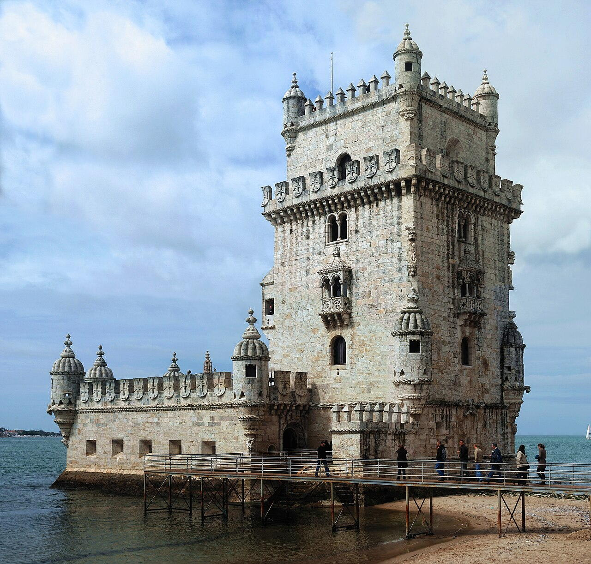
Riverside bastion and ceremonial gateway to Lisbon's harbour, decorated with Manueline rope motifs and royal shields.
Built from lioz limestone as part of King Manuel I's coastal defence and prestige programme.
Icon of Portugal's Age of Discovery imagery.
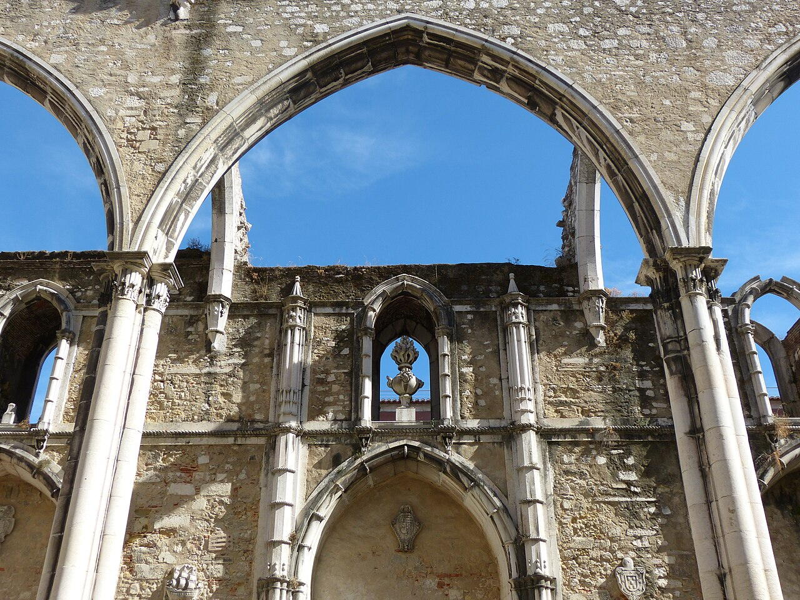
Roofless nave houses an archaeological museum under surviving pointed arches.
1755 shockwave stripped vaults; romantic ruin aesthetic drew 19th-century visitors.
Physical reminder of Lisbon's seismic vulnerability.
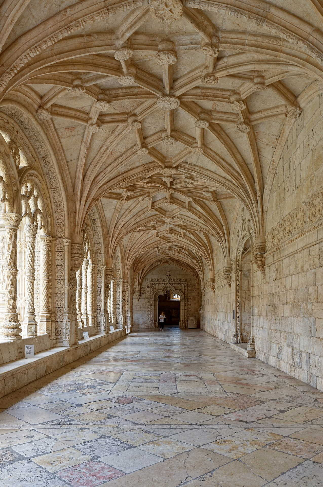
Hieronymite monastery funded by spice-trade wealth, housing Vasco da Gama's tomb and a filigree stone cloister.
Linked to the return of da Gama's first India voyage; the complex became a state pantheon for navigators.
High point of Portuguese Late Gothic carving.
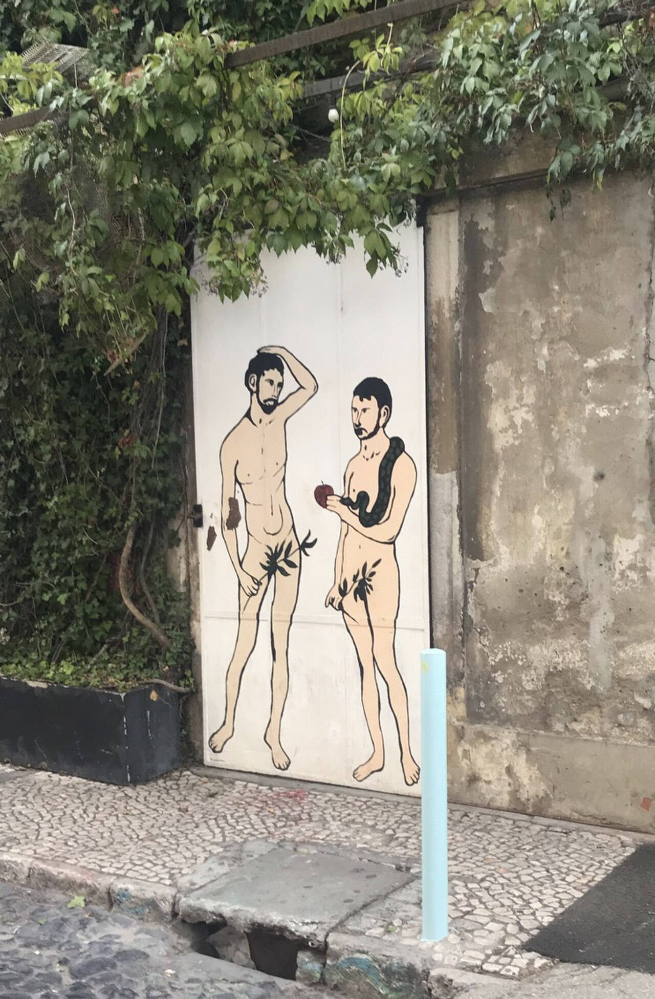
Street art, design shops, and rooftop bars inside a former textile mill yard under the bridge.
Lisbon's post-industrial waterfront strip attracted creatives before major hotel chains.
Alternative retail spine west of Belém.
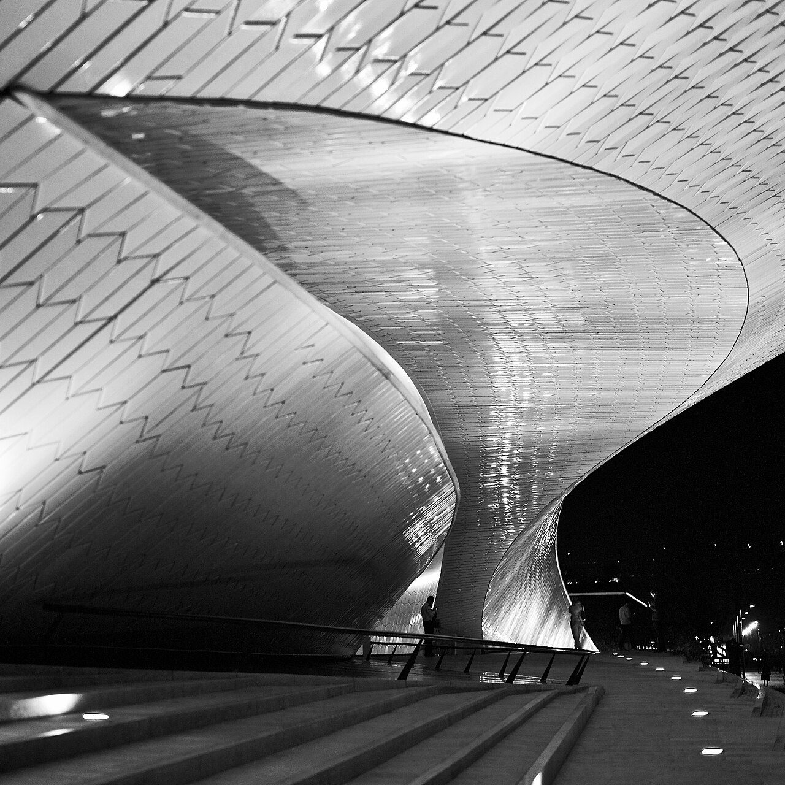
Riverfront contemporary art and technology shows with roof walks toward Ponte 25 de Abril.
EPAL power station neighbour negotiated shared public esplanades.
Belém's modern wing beyond the monastery axis.
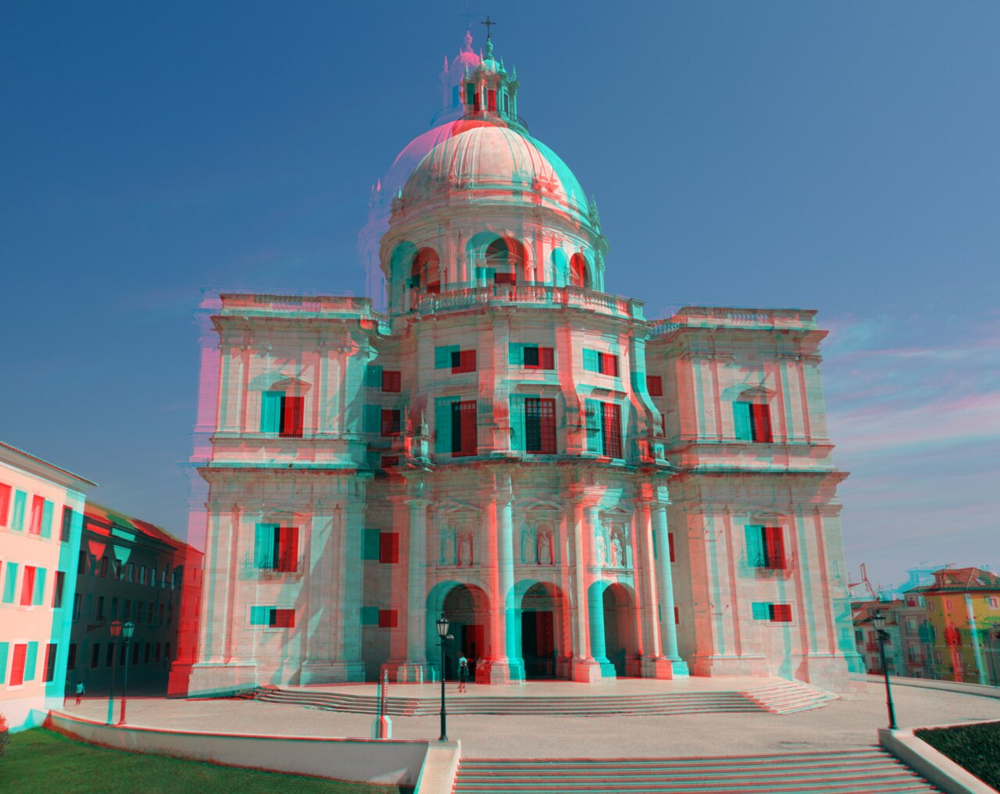
Whispering-gallery dome over tombs of presidents, fado singers, and navigators.
Unfinished church became a secular pantheon for national heroes.
360° roof views reward the climb from the tile quarter.
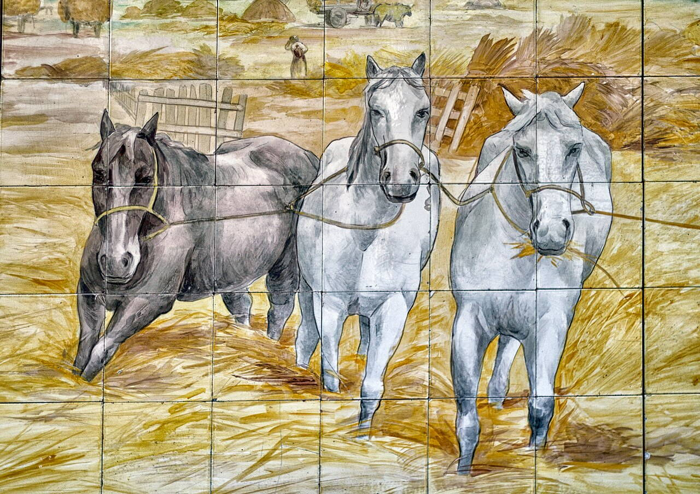
Blue-and-white tile panoramas including Lisbon pre-earthquake cityscape panels.
Madre de Deus church absorbed into a national azulejo collection.
Best single-site survey of Portuguese tile painting.
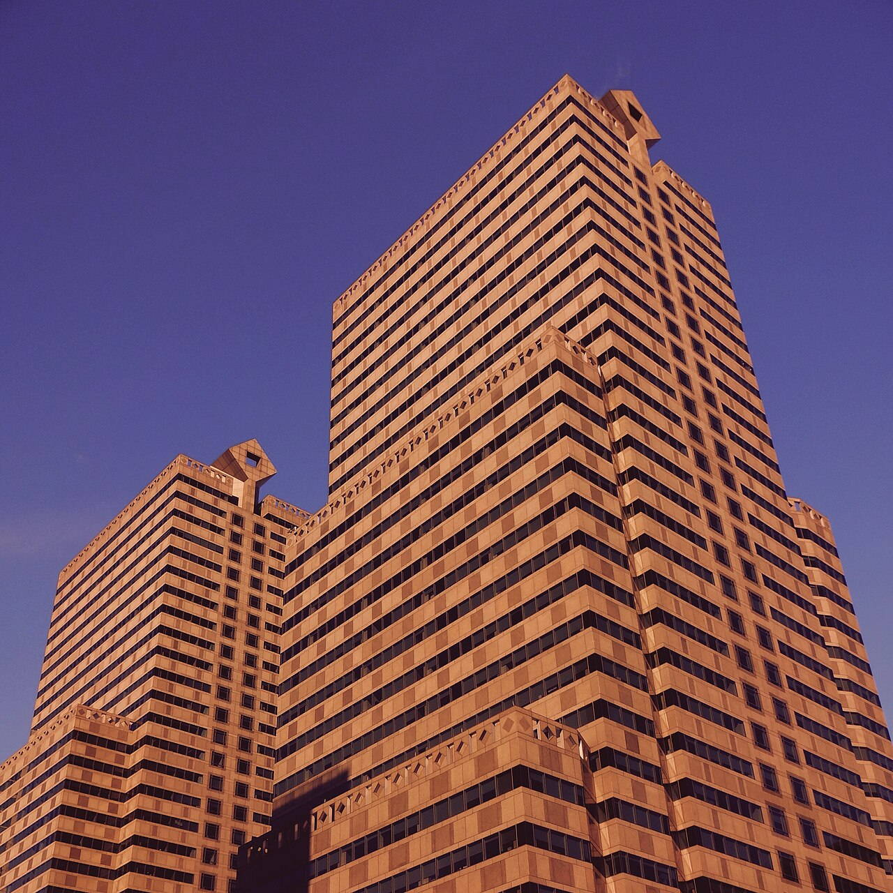
Yellow arcaded square opening to the Tagus, framed by government wings and the triumphal Rua Augusta Arch.
Replaced the royal palace destroyed in the 1755 earthquake as the city's ceremonial river gate.
Default festival ground and tourist orientation hub.
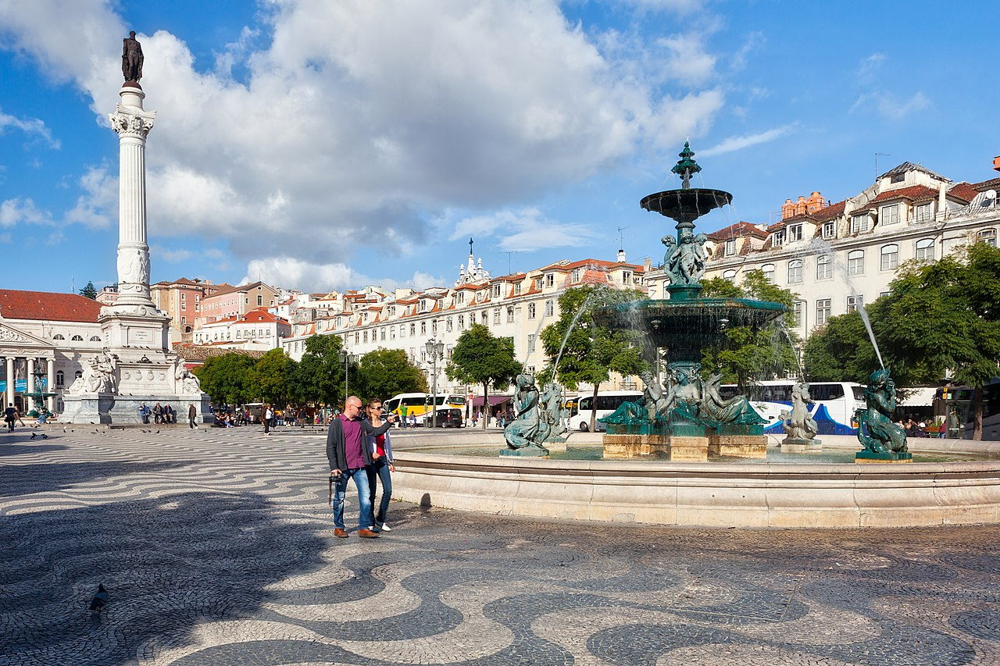
Central plaza with baroque fountains, theatre, and station portal feeding Sintra trains.
Inquisition autos-da-fé gave way to civic festivals and café culture.
Default meeting point between Baixa and nightlife hills.
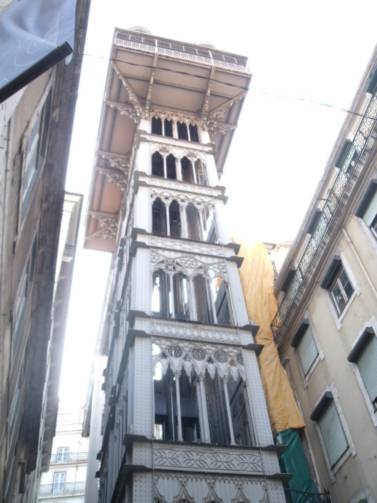
Vertical iron link between lower Baixa grid and Carmo terrace viewpoints, still using original carriages on busy days.
Steam originally powered the lift; electrification integrated it into Carris urban transport branding.
Industrial heritage selfie spot between grid and hill neighbourhoods.
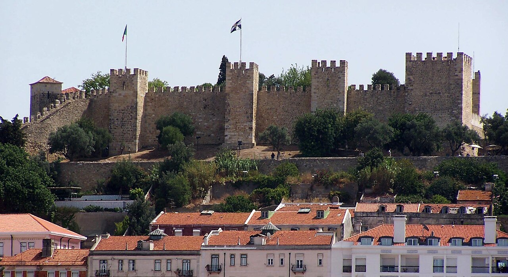
Hilltop fortifications with ramparts overlooking terracotta roofs, cruise ships on the Tagus, and peacocks in gardens.
Moorish citadel became royal palace; today's ruins are largely medieval and restored 20th-century fabric.
The compass rose for understanding Lisbon's seven hills layout.
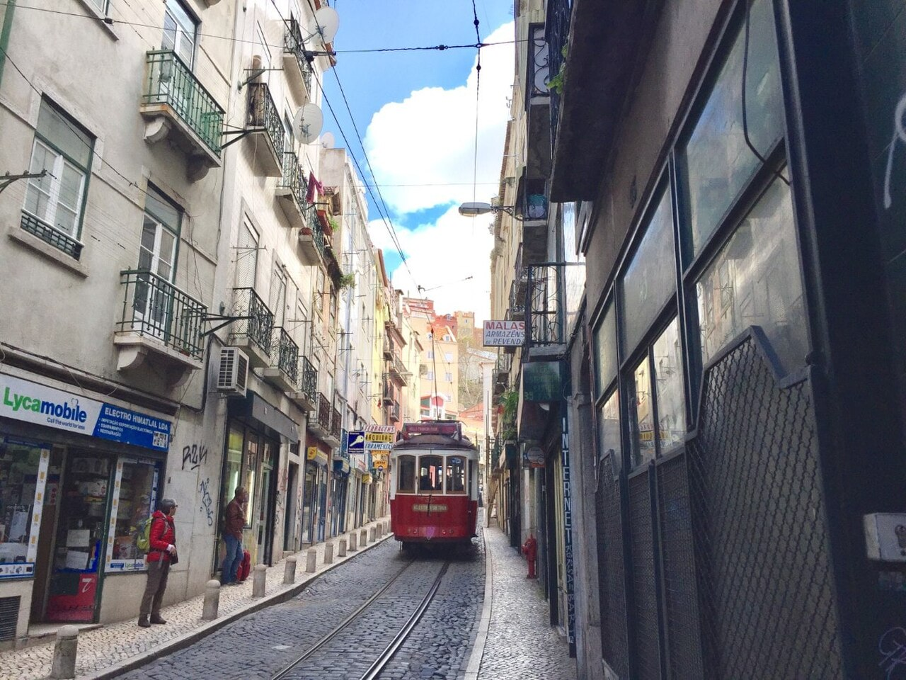
Wood-and-brass cars squeal through Alfama curves past miradouros and cathedral approaches.
Electrified lines replaced funiculars on some hills while keeping narrow gauge.
Moving postcard through the steepest historic quarters.